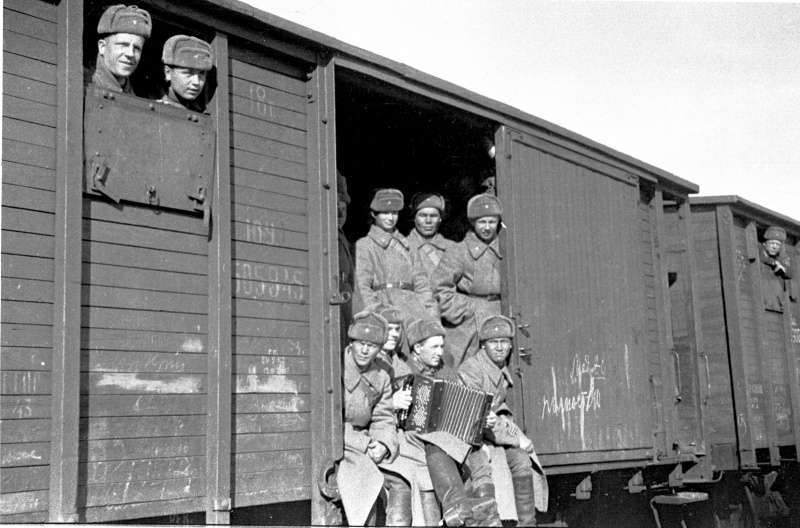
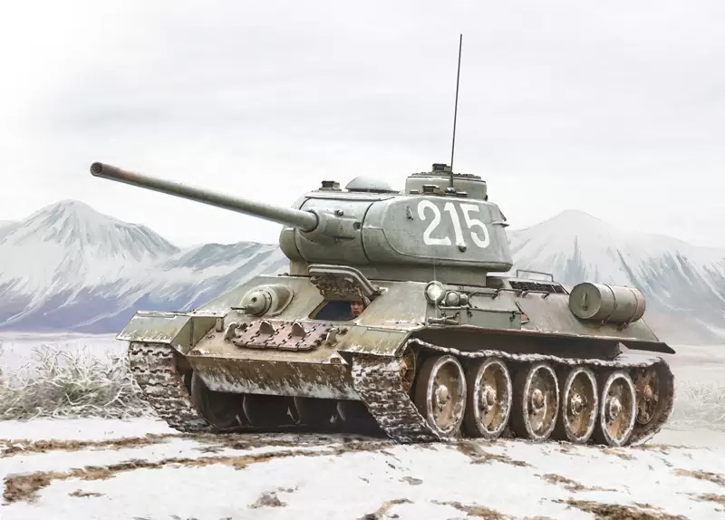
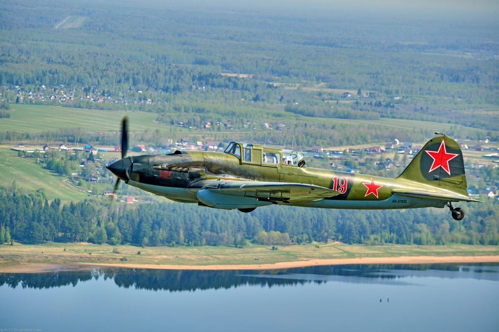

История праздника 23 февраля
День Защитника Отечества, отмечаемый 23 февраля, — это праздник, который символизирует мужество, честь и преданность Родине. История этого дня начинается в далеком 1918 году, в период тяжелых испытаний для молодой Советской республики. 28 января (15 января по старому стилю) 1918 года Совет народных комиссаров принял Декрет о создании Рабоче-Крестьянской Красной Армии (РККА). Это решение было вызвано необходимостью защиты страны от внешних врагов в условиях Первой мировой войны и надвигающейся гражданской войны.
Первое официальное празднование Дня Красной Армии состоялось 23 февраля 1919 года. Этот день был приурочен к годовщине первых боев РККА против немецких войск под Псковом и Нарвой. Хотя историки спорят о значимости этих боев, именно эта дата закрепилась в сознании людей как день рождения Красной Армии. В дальнейшем, в советский период, праздник носил название Дня Советской Армии и Военно-Морского Флота и отмечался с большим размахом. Проводились военные парады, концерты, организовывались торжественные собрания и вручались награды. 23 февраля стало символом героизма и самоотверженности советских воинов, защищавших страну в годы Великой Отечественной войны и в других вооруженных конфликтах.
После распада СССР праздник был переименован в День Защитника Отечества. Сегодня это день, когда мы чествуем всех мужчин, независимо от их профессии и возраста, которые готовы встать на защиту своей страны, своей семьи и своих близких. Это день памяти о героическом прошлом нашей Родины и день уважения к тем, кто сейчас несет службу в рядах Вооруженных Сил Российской Федерации.
День Защитника Отечества – это не только праздник военных. Это день, когда мы вспоминаем о подвигах наших дедов и прадедов, о мужестве и стойкости русского народа. Это день, когда мы говорим слова благодарности всем тем, кто посвятил свою жизнь служению Отчизне. Это день, когда мы желаем мира и благополучия нашей стране и всем ее гражданам.
Интересные факты о 23 февраля:
- Изначально праздник назывался Днем Красной Армии.
- Дата 23 февраля связана с первыми боями РККА в 1918 году.
- В советское время в этот день проводились военные парады.
- После распада СССР праздник был переименован в День Защитника Отечества.
- Сегодня это день чествования всех мужчин, а не только военных.

Легендарная техника: Оружие Победы
В этом разделе мы расскажем о самых известных образцах военной техники, которые внесли огромный вклад в защиту нашей Родины.

Танк Т-34
Средний танк Т-34 — советский танк периода Великой Отечественной войны, ставший самым массовым танком в мире. Отличался высокой маневренностью и мощным вооружением.
БМ-13 "Катюша"
Реактивная система залпового огня БМ-13 "Катюша" — легендарное оружие, наводившее ужас на врага своей мощью и разрушительной силой.

Штурмовик Ил-2
Штурмовик Ил-2 — советский самолет-штурмовик, прозванный "летающим танком" за свою броню и огневую мощь.
Это лишь малая часть легендарной техники, которая помогала защищать нашу Родину. Каждый образец военной техники – это результат труда тысяч людей, инженеров, конструкторов, рабочих, которые вкладывали все свои силы и знания в создание мощного оружия для защиты нашей страны. Память об этих образцах техники и о людях, которые их создавали и использовали, навсегда останется в нашей истории.